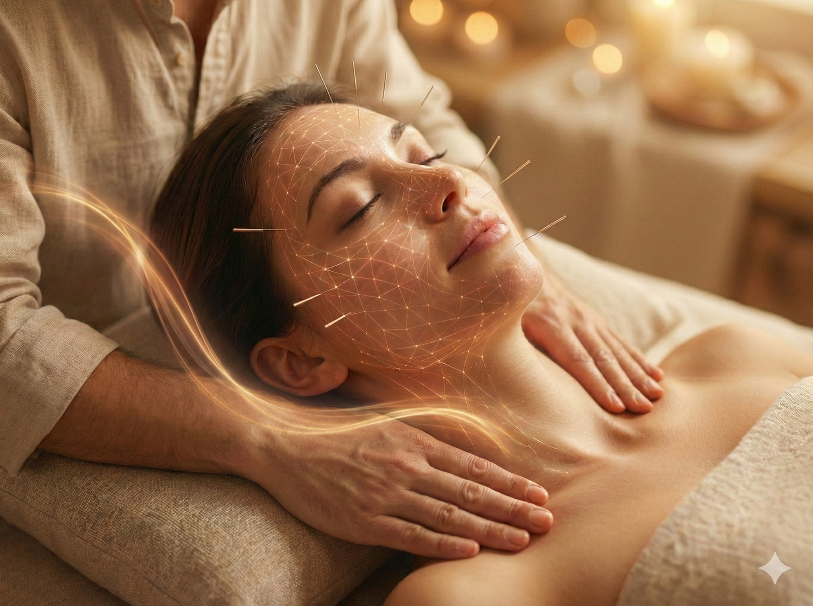

臉是張「畫布」，頭骨與頸椎才是「畫架」：從結構力學看韓式美顏針
【 臉是張「畫布」，頭骨與頸椎才是「畫架」：從結構力學看韓式美顏針 】
在諮詢 『韓式 F.A.C.E. 美顏針』 的過程中，許多患者會對診療流程感到好奇：「為什麼除了針灸臉部，還會同時評估頸椎排列與肩頸張力？」
這並非多此一舉，而是基於解剖學與生物力學的關鍵考量。
因為在人體的結構鍊中，「臉部的線條，往往取決於頸部的張力。」
-
🕸 觀念一：美顏針的本質，是臉部的「張力重置」
首先，我們需要重新定義美顏針的作用機制。
它不單是刺激膠原蛋白，更是一場精密的「肌筋膜張力重置 (Myofascial Tension Reset)」工程。
我們的臉部由一層錯綜複雜的 『SMAS 筋膜層』 與肌肉交織而成。隨著年齡增長與表情習慣，這張網會出現張力失衡：
- 過度收縮區（如眉間）： 形成動態紋路。
- 鬆弛無力區（如雙頰）： 導致輪廓下垂。
美顏針透過極微細的針刺，精準調節這些肌肉的張力（Muscle Tone），放鬆過緊的結點，同時喚醒無力的肌群。這是一個將臉部張力地圖「歸零校正」的過程。
-
🐢 觀念二：解剖列車效應——別忽視「後頸」的拉力
然而，若只專注於臉部，治療效果往往有限。為什麼？
因為人體的筋膜是連續的，臉部筋膜並非一座孤島。
依據「解剖列車 (Anatomy Trains)」理論，後背、後頸、頭皮到前額，是連成一氣的筋膜線（淺背線）。
試想一件『連帽 T 恤』的結構：
如果後面的帽子被用力往下拉（頸椎前傾、圓肩、後頸僵硬），前面的領口（臉部皮膚）自然會被繃緊，甚至產生向後下的拉扯力道。
這就是現代人常見的「烏龜頸」對顏面的影響。
當高位頸椎排列不正、枕骨後方張力過大時，這股拉力會透過帽狀腱膜傳導至臉部，抵銷了美顏針向上的提拉效果。
-
👐 針對顱骨肩頸徒手治療的必要性：1+1 > 2 的加乘效應
因此，我個人認為，一個全面、完整的美顏療程，必須包含「整體結構的評估與處置」。
在施作美顏針療程的同時，我們結合針對『肩頸與頭顱的徒手治療』，目的在於：
1. 釋放遠端張力： 矯正高位頸椎排列，鬆解胸鎖乳突肌與斜角肌與枕下肌群，移除將臉部「往下拉」的干擾源。
2. 優化血液灌注： 頸部是頭面部氣血供應的必經通道。當頸部肌肉放鬆、血管壓力解除，美顏針引導氣血修復的效果才能最大化。
先有「結構還原」，才有「完美美顏」。
從地基（頸部）改善結構環境，才能讓臉部的緊緻與透亮感，維持得更穩定、更長久。
-
👨⚕️ 醫師的臨床建議
美顏針不僅是美容技術，更是一種「由內而外」的整體結構醫學。
當您發現臉部線條不順、氣色黯沉時，除了保養臉部，不妨也檢視一下您的頸椎與體態。或許，那才是解開美麗封印的關鍵鑰匙。
#中醫美顏 #韓式美顏針 #張力重置 #整體評估 #結構醫學 #烏龜頸 #肌筋膜連動 #高位頸椎 #中醫徒手治療
太初中醫診所 東門中醫
中醫師 黃彥鈞
---
🔎 實證醫學與參考文獻 (References)：
1. Stecco C, et al. (2011). The fascia: the forgotten structure. (Italian Journal of Anatomy and Embryology).
(解剖學權威文獻，證實人體的淺層筋膜是連續不斷的。佐證了後頸部與頭皮的張力異常，確實會透過筋膜網絡傳導，進而影響臉部的軟組織表現。)
2. Yun Y, et al. (2013). Effect of facial cosmetic acupuncture on facial elasticity. (Evidence-Based Complementary and Alternative Medicine).
(臨床研究證實，美顏針能透過調節臉部肌肉張力與促進微循環，顯著改善皮膚彈性。)
3. Myers TW. (2014). Anatomy Trains: Myofascial Meridians for Manual and Movement Therapists.*
(經典的「解剖列車」理論，詳細描述了淺背線如何從背部延伸至眉骨，完美解釋了處理後頸張力為何能改善前額與臉部的緊繃。)
4. Bordoni B, et al. (2019). The benefits of massage therapy for head and neck pain. (Journal of Multidisciplinary Healthcare).
(證實針對頭頸部的徒手治療能有效改善筋膜張力與淋巴循環，為合併治療提供了學理上的支持。)
5. Donoyama N, et al. (2012). Cosmetic acupuncture to enhance facial skin appearance. (Acupuncture in Medicine).
(指出針刺能有效增加臉部的血流量與皮膚含水量，而頸部結構的通暢是確保頭面部血液供應的關鍵。)
本文僅供衛教分享。每個人體質與結構狀況不同，實際療程內容需由專業醫師評估後執行。
